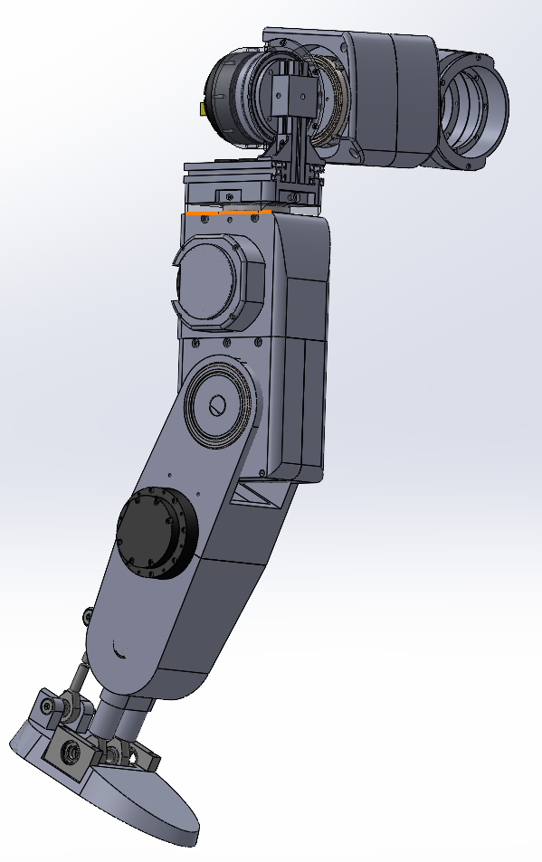
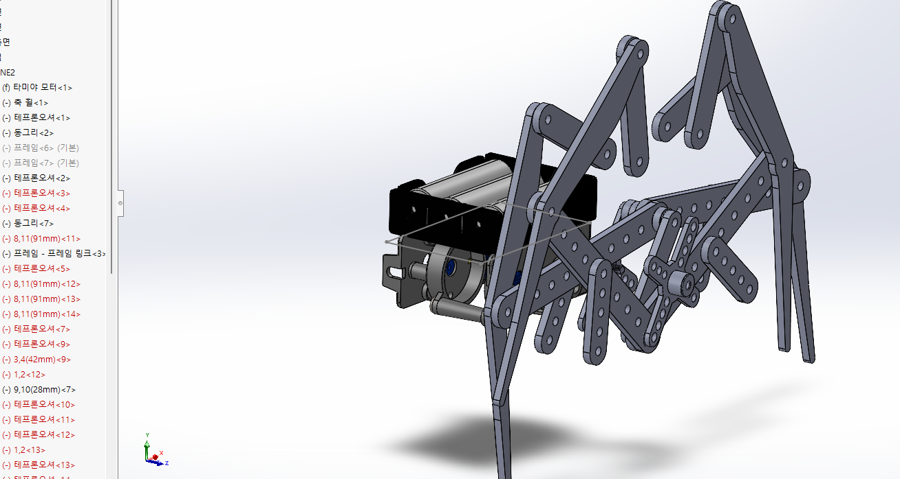
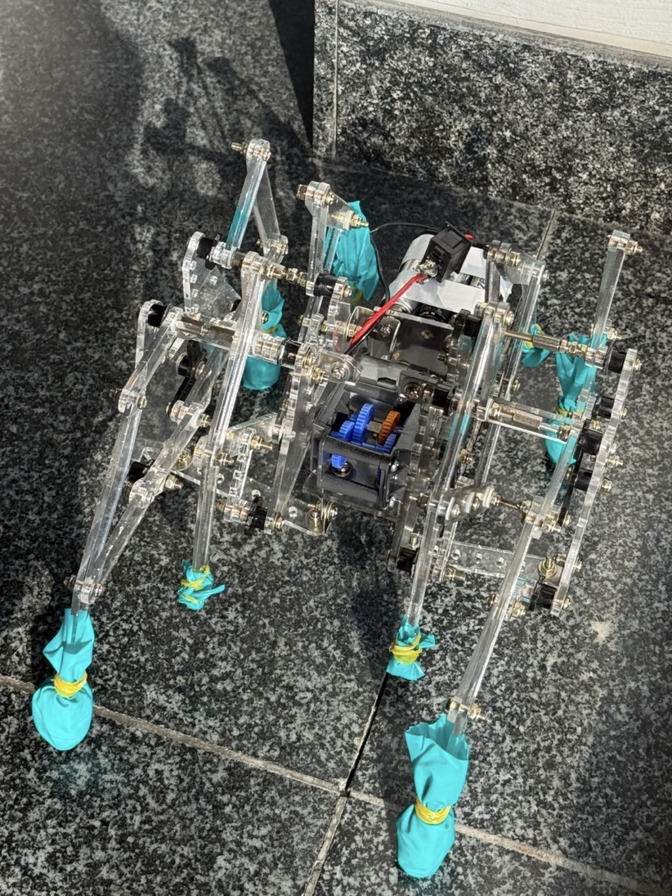
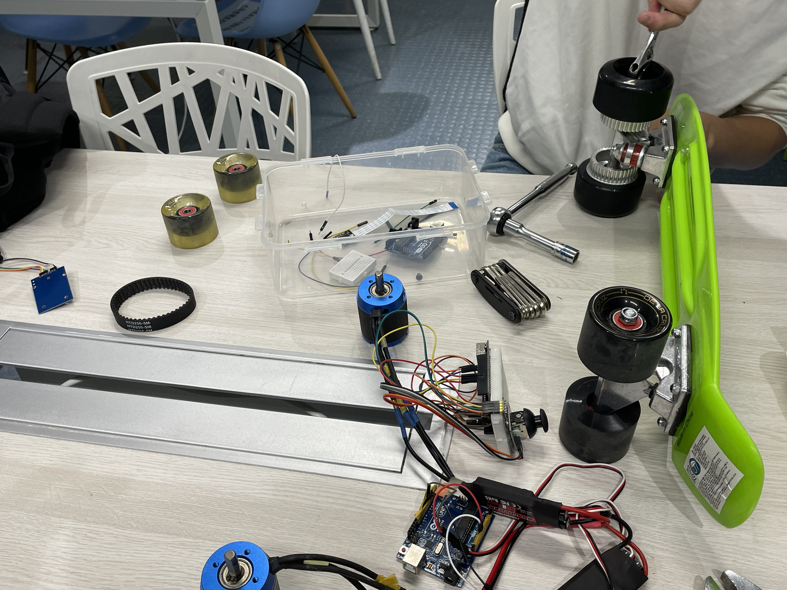
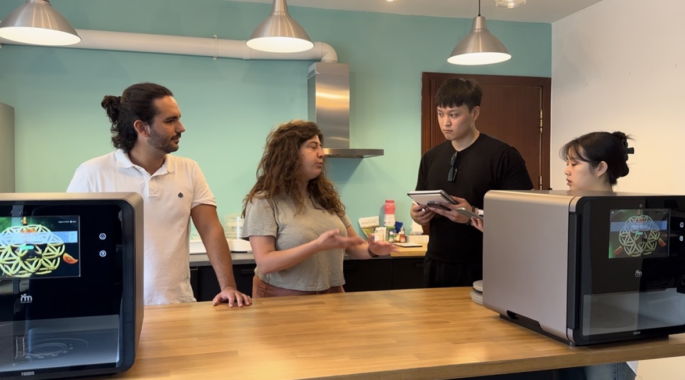
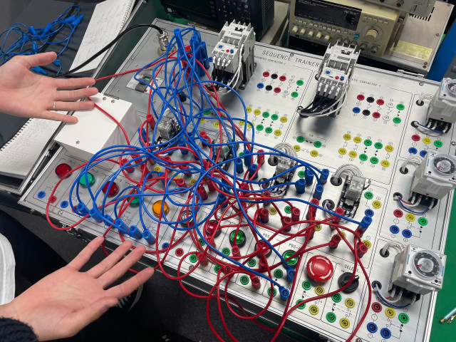

PERFECTION IN
AI MEMORY
CORE PHILOSOPHYCORE PHILOSOPHY
입증된 반도체 공학 기반Proven Semiconductor Foundation
로봇소프트웨어 전공 과정을 통해 기계, 전자, 소프트웨어 기술을 아우르는 메카트로닉스 융합 역량을 확보했습니다. 회로 설계, 3D 기구 설계, 프로그래밍 등 반도체 장비 유지보수 및 제어에 필요한 핵심 실무 기술을 빈틈없이 훈련했습니다.Through the Robot Software major, I secured mechatronics convergence capabilities encompassing mechanical, electronic, and software technologies. I have rigorously trained in core practical skills necessary for semiconductor equipment maintenance and control, such as circuit design, 3D CAD, and programming.
- 전기전자 / 디지털 논리회로 이해Understanding of Electronics & Digital Logic
- 장비 정밀 제어의 근간이 되는 탄탄한 전공 지식Solid major knowledge forming the basis of precision equipment control
DBL (Double Bottom Line)DBL (Double Bottom Line)
경제적 수익과 사회적 가치를 동시에 창출합니다. 자원 효율화와 환경 부하 저감을 고려한 '지속 가능한 유지보수' 방안을 강구하여 혁신을 추구합니다.Creating economic profit and social value simultaneously. I pursue innovation by devising 'sustainable maintenance' plans that consider resource efficiency and environmental load reduction.
- 에너지 효율 설계Energy-efficient Design
- 폐기물 최소화 유지보수Waste-minimizing Maintenance
Humanoid-Based ReliabilityHumanoid-Based Reliability
현재 수행 중인 휴머노이드 로봇 제작 경험을 바탕으로, 복잡한 다중 관절 제어와 고신뢰성 구동 시스템에 대한 깊은 이해를 유지보수에 적용합니다.Based on my ongoing experience building a humanoid robot, I apply a deep understanding of complex multi-joint control and highly reliable drive systems to maintenance.
- 다축 동력 제어 최적화Multi-axis Power Control Optimization
- 고정밀 센서 데이터 처리High-precision Sensor Data Processing
INTEGRATED ENGINEERING STACKENGINEERING CAPABILITIES
Hardware & Robot ControlHardware & Robot Control
'전기전자기초', '디지털공학', '디지털회로 설계' 등 기초물리부터 심화 회로 설계까지 수강하며 장비 전장부의 신호 체계를 파악했습니다. '시스템프로그래밍'을 통해 하드웨어와 소프트웨어 간의 로우 레벨 통신 원리를 완벽히 이해하고 노이즈 및 통신 불량을 진단할 수 있습니다.Through courses like 'Basics of Electrical & Electronics' and 'Digital Circuit Design', I understand the signal systems of equipment electrical parts. With 'System Programming', I fully grasp low-level communication principles between hardware and software to diagnose noise and communication failures.
'마이크로컨트롤러'와 '아두이노프로그래밍' 실습을 거쳐, '로봇기초', '메카트로닉스제어' 지식을 바탕으로 복잡한 센서 신호 처리와 모터 및 액추에이터 제어 실무 능력을 갖추어, 장비의 구동 메커니즘을 직관적으로 파악합니다.Through 'Microcontroller' and 'Arduino Programming' practices, combined with 'Basics of Robotics' and 'Mechatronics Control', I acquired practical skills in complex sensor signal processing and actuator control, intuitively understanding equipment drive mechanisms.
'3차원 CAD'와 '엔지니어링기초'를 통해 하드웨어 파츠의 기계적 한계와 공차를 계산하는 설계 역량을 확보했습니다. 이를 바탕으로 '창의적공학설계(캡스톤디자인)' 및 '창의력과 문제해결' 역량을 발휘해 반도체 장비 구조 개선에 필요한 기계적 통찰력을 증명했습니다.Through '3D CAD' and 'Engineering Basics', I secured capabilities to calculate mechanical limits and tolerances of hardware parts. Based on this, I proved my mechanical insights necessary for equipment structure improvement in 'Creative Engineering Design (Capstone)'.
Software & System IntegrationSoftware & System Integration
'컴퓨터' 기초 지식 위에 '윈도우 프로그래밍'과 '웹 프로그래밍'을 수강하여, 생산 현장에서 장비를 직접 조작하고 가동률과 수율 데이터를 실시간으로 모니터링 및 시각화할 수 있는 데스크톱 GUI 및 웹 대시보 구축 원리를 습득했습니다.Building on 'Computer' basics, I took 'Windows' and 'Web Programming' to learn the principles of building desktop GUIs and web dashboards that operate production equipment and visualize operation rates and yield data in real-time.
복잡한 자동화 설비의 핵심인 'PLC 프로그래밍'과 '시퀀스 제어'를 이수했습니다. 입력 조건에 따른 정확한 출력 시퀀스를 설계하고, 공압 실린더 및 스텝 모터 등을 연동하여 정밀하고 안정적인 제조 공정 자동화 로직을 구현할 수 있습니다.Completed 'PLC Programming' and 'Sequence Control', which are core to complex automated equipment. I can design accurate output sequences based on input conditions and implement precise automation logic by linking various hardware parts.
'파이썬 프로그래밍'과 '데이터 분석 입문'을 통해 대량의 로그 데이터를 다루는 능력을 길렀습니다. '인공지능개론', 'AI와 사회변화' 강좌와 접목하여, 장비 센서 데이터를 분석해 고장을 미리 예측(Predictive Maintenance)하는 차세대 엔지니어링 감각을 갖추었습니다.Developed skills to handle massive log data through 'Python' and 'Intro to Data Analysis'. Combined with 'Intro to AI' and 'AI & Social Change', I possess next-generation engineering sense to predict failures (Predictive Maintenance) by analyzing equipment sensor data.
CORE PROJECTSCORE PROJECTS
HUMANOID
LOWER-BODY DESIGNHUMANOID
LOWER-BODY DESIGN
전공동아리 프로젝트의 핵심인 휴머노이드 하체(Legs) 기구 설계 및 메커니즘 역학 해석을 책임지고 있습니다. 기존의 단순 조립을 넘어, 생체역학 데이터에 기반한 고정밀 기구를 직접 설계하며 반도체 설비 유지보수에 직결되는 압도적인 공학적 문제해결 능력을 증명합니다.I am in charge of humanoid lower-body mechanism design and dynamics analysis, which is the core of the major club project. Going beyond simple assembly, I directly design high-precision mechanisms based on biomechanical data, demonstrating overwhelming engineering problem-solving capabilities directly related to semiconductor equipment maintenance.
- 최적 감속기 기어비 도출: 각 관절이 지탱하는 하중(Load Path)과 요구 토크를 계산하여, 모터 동력을 고정밀·고효율로 전달하는 최상의 감속기 기어비를 산출하고 하드웨어를 구성합니다.Derivation of optimal reducer gear ratio: By calculating the load (Load Path) supported by each joint and the required torque, I calculate the best reducer gear ratio that transmits motor power with high precision and high efficiency and configure the hardware.
- RSU 발목 & 지면 순응 메커니즘: 듀얼 모터로 Roll/Pitch를 제어하는 병렬형 RSU(Revolute-Spherical-Universal) 관절 아키텍처와 Toe-Rocker 구조를 적용하여 보행 안정성과 접지력을 극대화했습니다.RSU Ankle & Ground Compliance Mechanism: Maximized walking stability and traction by applying a parallel RSU (Revolute-Spherical-Universal) joint architecture and Toe-Rocker structure that controls Roll/Pitch with dual motors.
- 메인터넌스 친화적 모듈화(Serviceability): 정밀 하드웨어 모듈화 설계 방식을 도입하여, 복잡한 특수 공구 없이도 액추에이터와 내부 파츠를 즉각 교체할 수 있는 뛰어난 유지보수 효율성을 확보했습니다.Maintenance-friendly modularization (Serviceability): By introducing a precision hardware modular design approach, I secured excellent maintenance efficiency that allows immediate replacement of actuators and internal parts without complex special tools.

8족 보행 로봇
설계 및 제어8-LEGGED ROBOT
DESIGN & CONTROL
1학년 2학기 캡스톤디자인 로봇경진대회에 출전하여 다관절 보행 로봇의 하드웨어 설계와 제어 알고리즘을 최적화해 최종 2위를 수상했습니다. 복잡한 링크 구조의 역학을 계산하고 마이크로컨트롤러 기반의 서보모터 제어 로직을 직접 구현하며, 이론적 지식을 실제 구동 가능한 메카트로닉스 시스템으로 통합하는 뛰어난 실무 능력을 입증했습니다.Participated in the Capstone Design Robot Competition during the 2nd semester of my freshman year, winning 2nd place by optimizing the hardware design and control algorithm of a multi-joint walking robot. By calculating the dynamics of complex link structures and implementing MCU-based servo motor control logic, I proved my excellent practical ability to integrate theoretical knowledge into a workable mechatronics system.
- 다관절 링크 메커니즘 설계: 보행 시 무게중심 이동과 지면 반발력을 고려하여, 로봇이 넘어지지 않고 안정적으로 전진할 수 있는 최적의 다리 링크 길이와 관절 각도를 도출했습니다.Multi-joint Link Mechanism Design: Considering the shift in center of gravity and ground reaction force during walking, I derived the optimal leg link length and joint angle that allow the robot to move forward stably without falling.
- 정밀 서보모터 시퀀스 제어: 8개의 다리가 유기적으로 교차하는 보행 패턴(Gait Pattern)을 분석하고, 딜레이 없는 실시간 PWM 제어 로직을 코딩하여 부드럽고 빠른 기동성을 확보했습니다.Precision Servo Motor Sequence Control: Analyzed the gait pattern where 8 legs cross organically, and coded real-time PWM control logic without delay to ensure smooth and fast mobility.
- 트러블슈팅 및 성능 최적화: 시운전 중 발생한 모터 발열과 기어 슬립 문제를 파악하고, 하중 분산 설계를 재적용하여 내구성을 극대화하는 엔지니어링 문제해결 역량을 발휘했습니다.Troubleshooting & Performance Optimization: Identified motor heating and gear slip issues during test runs, and demonstrated engineering problem-solving skills by re-applying load distribution design to maximize durability.


아두이노 기반
전동 스케이트보드 제어ARDUINO-BASED
E-SKATEBOARD CONTROL
모터 구동과 동력 전달의 기초를 다지기 위해 팀 프로젝트로 전동 스케이트보드를 직접 제작했습니다. 아두이노와 모터를 연동하고 타이밍 벨트를 활용해 바퀴 축으로 동력을 전달하는 기구부를 설계했습니다. 1단부터 4단까지 속도를 제어하는 PWM 로직을 구현했으며, 크리스마스 시즌에 맞춰 각 단수별로 모터 구동음이 캐럴 음계를 연주하도록 코딩하여 창의적인 엔지니어링 감각을 발휘했습니다.Built an electric skateboard as a team project to solidify the basics of motor drive and power transmission. Designed a mechanical system connecting the Arduino to the motor and transmitting power to the wheel axle using a timing belt. Implemented PWM logic to control 4 speed levels, and creatively coded the motor drive sound to play Christmas carol notes for each gear during the holiday season, demonstrating both engineering fundamentals and creativity.
- 동력 전달 메커니즘 설계: 모터의 회전력을 바퀴 축으로 손실 없이 전달하기 위해 타이밍 벨트와 풀리의 기어비를 계산하고, 직접 하드웨어 파츠를 가공 및 조립했습니다.Power Transmission Mechanism: Calculated the gear ratio of the timing belt and pulley to transmit the motor's rotational force to the wheel axle without loss, directly machining and assembling hardware parts.
- 아두이노 PWM 속도 제어: 아두이노를 통해 1단부터 4단까지 속도가 점진적으로 가속되도록 모터 드라이버 PWM 신호를 제어하여 안정적인 주행 알고리즘을 구축했습니다.Arduino PWM Speed Control: Built a stable driving algorithm by controlling the motor driver PWM signals via Arduino so the speed accelerates gradually from level 1 to 4.
- 창의적 피드백(캐럴 음계) 구현: 속도 단수가 바뀔 때 모터 주파수를 변조하여 크리스마스 캐럴 음계가 재생되도록 프로그래밍함으로써, 하드웨어와 소프트웨어를 융합한 유쾌하고 창의적인 아이디어를 실현했습니다.Creative Feedback (Carol Notes): Programmed the motor frequency to play Christmas carol notes when gears shift, realizing a fun and creative idea combining hardware and software.

HBM4 생산 장비 통합 제어 및 고장 진단 시스템 최적화Optimization of HBM4 Production Equipment Integrated Control and Failure Diagnosis System
1. Challenge: 복합 시스템의 무결성 확보1. Challenge: Securing the integrity of complex systems
HBM4 고적층 공정은 PLC 센서 데이터, Windows 제어 GUI, 정밀 기구부가 완벽히 동기화되어야 합니다. 기존 시스템은 비동기적 데이터 처리로 인해 0.05mm 이상의 적층 오차가 간헐적으로 발생했습니다.The high-stack HBM4 process requires perfect synchronization of PLC sensor data, Windows control GUI, and precision mechanics. The existing system occasionally caused stacking errors of 0.05mm or more due to asynchronous data processing.
2. Technical Approach: 융합형 엔지니어링 솔루션2. Technical Approach: Convergent Engineering Solution
- PLC & Circuit Logic: 시퀀스 최적화와 회로 고장 진단을 통해 데이터 지연 및 노이즈 80% 저감PLC & Circuit Logic: Reduced data latency and noise by 80% through sequence optimization and circuit failure diagnosis
- Windows & Web UI: C# 기반 고정밀 모니터링 GUI와 실시간 웹 대시보드를 연동하여 공정 가시성 확보Windows & Web UI: Secured process visibility by linking a high-precision monitoring GUI based on C# and a real-time web dashboard
- Mechanical Design: SolidWorks 시뮬레이션을 통한 진동 상쇄용 기구물 추가 설계Mechanical Design: Additional design of vibration offset mechanism through SolidWorks simulation
3. Impact: 정량적 혁신 증명3. Impact: Proof of Quantitative Innovation
- 0.01mm 이내 고정밀 적층 성공 및 수율 15% 향상Successful high-precision stacking within 0.01mm and 15% yield improvement
- 장비 평균 고장 시간(MTBF) 35% 개선35% improvement in Mean Time Between Failures (MTBF)
- SK하이닉스의 DBL(경제적 가치 극대화) 지표 달성Achieved SK hynix's DBL (Maximization of Economic Value) index
PROJECT EXPERIENCEPROJECT EXPERIENCE
전공동아리 휴머노이드 팀 프로젝트Major Club Humanoid Team Project
하체(Legs) 메커니즘 설계 및 감속기 역학 분석 전담In charge of Legs mechanism design and reducer dynamics analysis
로봇소프트웨어과 전공동아리에서 다축 휴머노이드 로봇의 하체 기구 구조를 메인으로 설계하고 있습니다. 모터의 요구 토크에 맞춘 감속기 기어비를 산출하고, 로봇이 보행할 때 발생하는 동적 하중(Load Path)과 구조적 결함을 시뮬레이션으로 예측해 RSU 발목 등 고정밀 메커니즘을 구현합니다. 복잡한 하드웨어의 뼈대를 직접 설계하는 이 경험은 반도체 설비 시스템의 구동부를 직관적으로 이해하고 고장을 진단하는 핵심 역량이 됩니다.I am mainly designing the lower body mechanism structure of a multi-axis humanoid robot in the major club. By calculating the reducer gear ratio tailored to the motor's required torque and simulating dynamic loads (Load Path) and structural defects during walking, I implement high-precision mechanisms such as RSU ankles. This experience of directly designing the skeleton of complex hardware becomes a core competency to intuitively understand the drive parts of semiconductor equipment systems and diagnose failures.
해외 교류 프로그램Overseas Exchange Program
도전정신, 추진력, 열정을 두루 갖춘 글로벌 리더 육성 프로그램Global Leader Program fostering challenge, drive, and passion
교내 타전공인 제과제빵과 학생들과 협업하여 해외 기업 '내추럴 머신스(Natural Machines)'의 푸드 3D 프린터를 조사 및 인터뷰했습니다. 스페인 바르셀로나 현지의 여러 대학교를 방문해 인터뷰를 진행하고, 직접 기획한 프로젝트를 PPT로 발표하며 다학제간 커뮤니케이션 능력과 글로벌 문제 해결 감각을 길렀습니다.Collaborated with students from a different major, the Baking & Pastry department, to research and interview the overseas food 3D printer company 'Natural Machines'. Visited various universities in Barcelona, Spain to conduct interviews and presented our self-planned project via PPT, demonstrating multi-disciplinary communication and global problem-solving skills.



AI 모델 동작 및 이미지/데이터 분석 실습AI Model Operation & Data Analysis Practicum
'AI와 사회변화' 프로젝트 수행'AI & Social Change' Project Execution
'AI와 사회변화' 교과목에서 인공지능 알고리즘이 실제 하드웨어 구동 및 비전 이미지 처리 등 다양한 데이터 추론에 어떻게 적용되는지 실습했습니다. 첨부된 AI 이미지 처리 결과와 같이 AI 모델을 통한 판별 결과를 직접 확인하며, 향후 반도체 장비의 비전 검사나 예측 정비(Predictive Maintenance)에 응용할 수 있는 차세대 데이터 처리 감각을 길렀습니다.In the 'AI and Social Change' course, I practiced how AI algorithms are applied to various data inferences such as actual hardware drive and vision image processing. By directly verifying the discrimination results through the AI model as shown in the attached AI image processing result, I developed a next-generation data processing sense that can be applied to vision inspection or predictive maintenance of semiconductor equipment in the future.

하드웨어 논리 배선 및 시퀀스 회로 구성Hardware Logic Wiring & Sequence Circuit Configuration
'시퀀스 제어' 실무 실습'Sequence Control' Practical Exercise
반도체 제조 자동화 설비의 뼈대가 되는 '시퀀스 제어' 과목을 이수하며 직접 결선하고 테스트한 제어반 구성 사진입니다. 릴레이, 타이머, 스위치를 활용하여 순차적으로 동작하는 하드웨어 논리 제어 회로를 완벽하게 설계 및 배선하여, 복잡한 공장 자동화 설비의 로우레벨(Low-level) 작동 원리를 몸소 체득했습니다.This is a photo of the control panel configuration that I directly wired and tested while completing the 'Sequence Control' course, which is the backbone of semiconductor manufacturing automation equipment. By utilizing relays, timers, and switches to perfectly design and wire a hardware logic control circuit that operates sequentially, I personally acquired the low-level operating principles of complex factory automation equipment.

소프트웨어 및 하드웨어 융합형 인재 교육 이수Completed SW & HW Convergence Education
전기전자, 디지털논리회로, 웹/윈도우 프로그래밍 등Electronics, Digital Logic, Web/Windows Programming, etc.
반도체 설비 유지보수 및 자동화 시스템 제어에 필수적인 핵심 전공 커리큘럼을 이수했습니다. 전기전자 및 디지털논리회로 강좌를 통해 장비의 전장 통신 및 하드웨어 메커니즘을 심도 있게 이해하며, 웹, 파이썬, 윈도우 프로그래밍을 수강하여 설비 제어 GUI와 가동률 데이터 모니터링 시스템을 직접 구축할 수 있는 소프트웨어 설계 역량을 보유하고 있습니다.Completed the core major curriculum essential for semiconductor equipment maintenance and automation system control. Through courses in Electronics and Digital Logic Circuits, I deeply understand the electrical communication and hardware mechanisms of equipment. Additionally, by taking Web, Python, and Windows Programming, I possess the software design capability to directly build equipment control GUIs and operation data monitoring systems.
함께 성장하는 기술 혁신가A Technology Innovator Growing Together
동양미래대학교 로봇소프트웨어과 | SK하이닉스의 미래를 설계할 준비가 되어 있습니다.Robot Software Engineering, Dongyang Mirae Univ. | Ready to design the future of SK hynix.